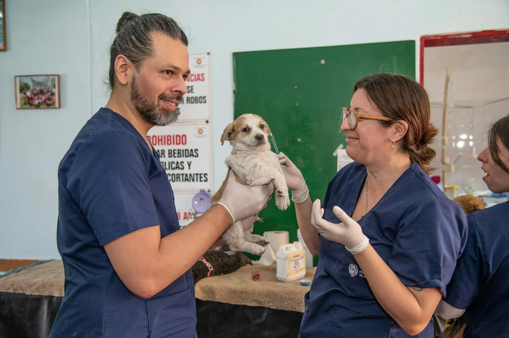
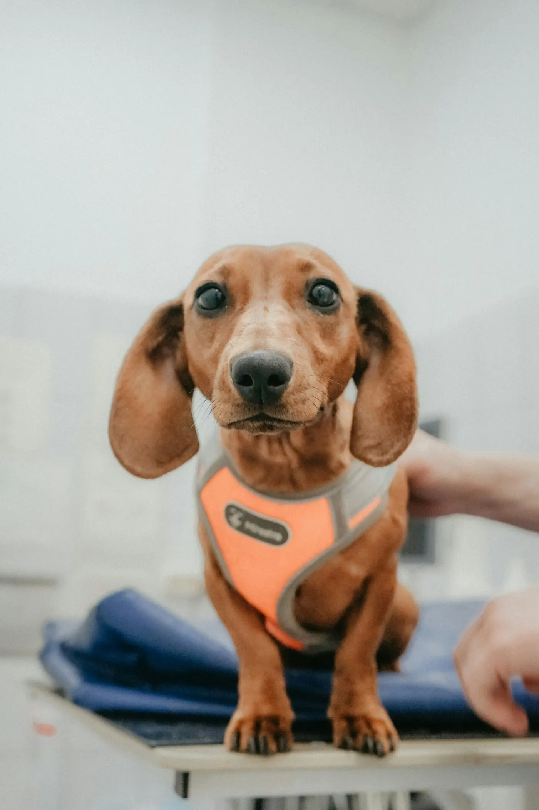
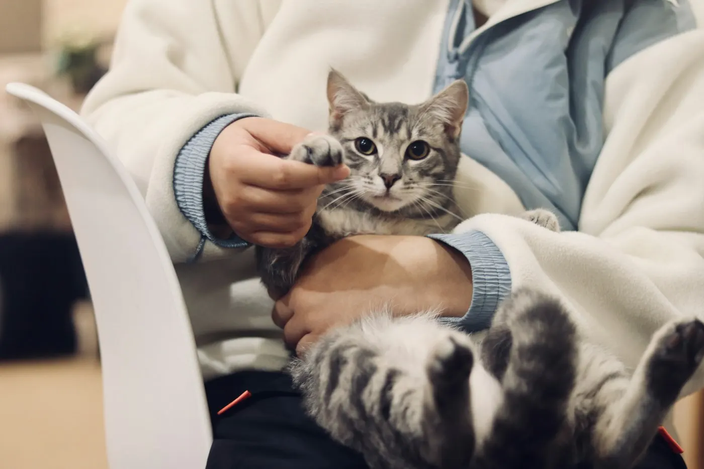
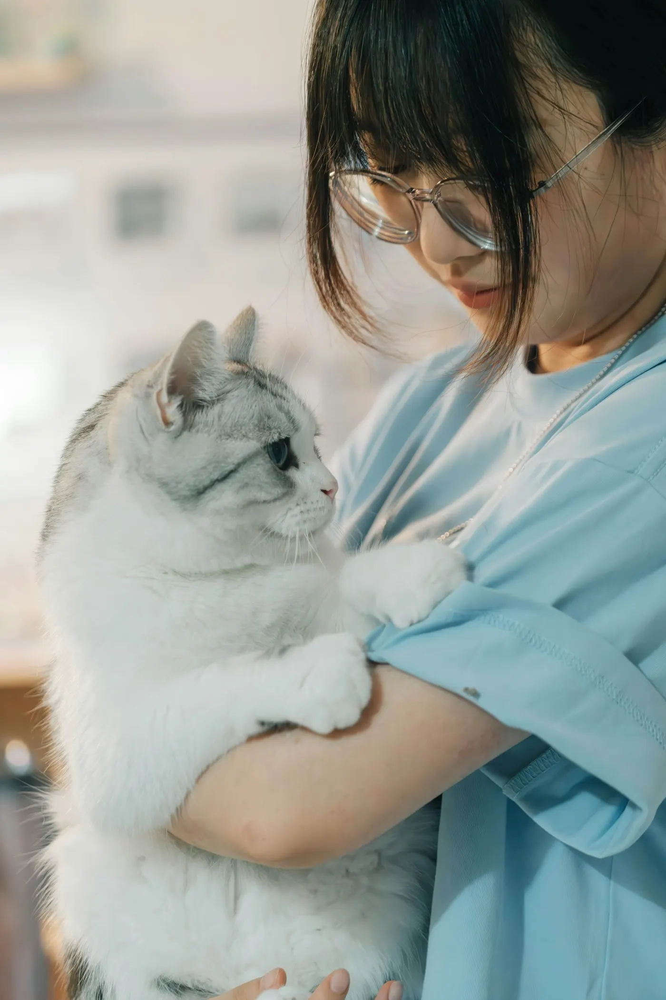
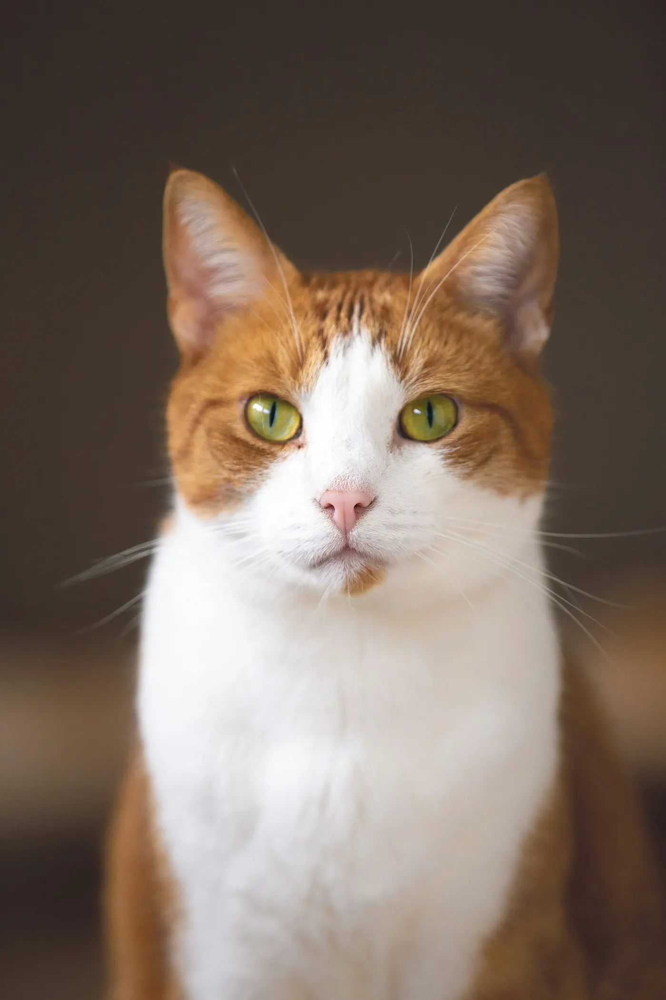
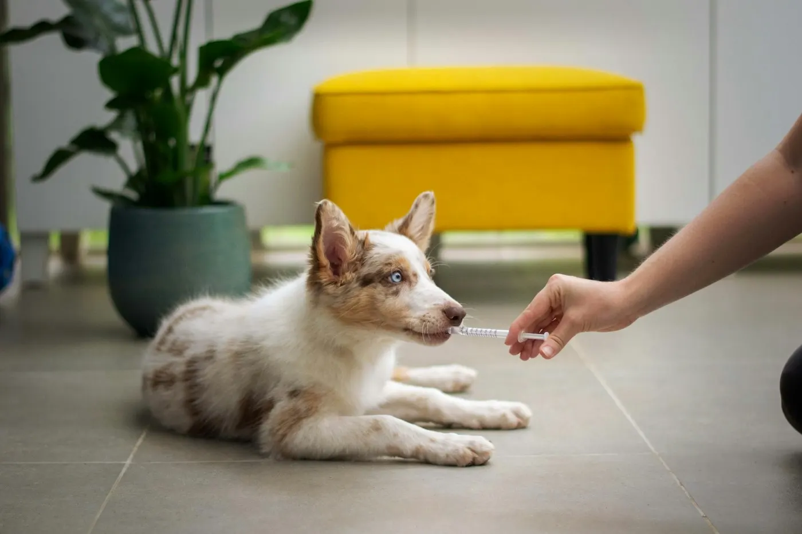
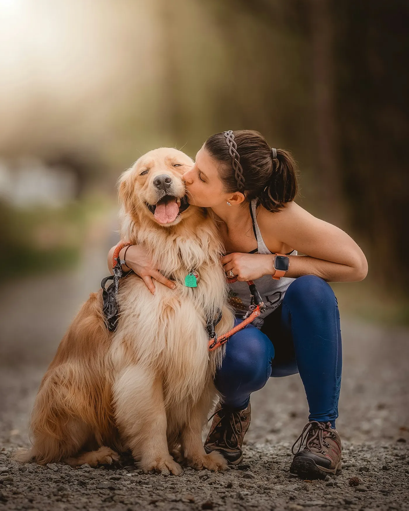

01
一般內科
食慾、精神、腸胃與泌尿問題的檢查與治療。



About
森丘動物醫院希望成為毛孩一輩子的家庭醫院。看診時，醫師會先和飼主聊聊平常的飲食與活動，再一起決定檢查與治療方式。
院內把狗狗和貓咪的候診區分開，診間也盡量保持安靜，讓第一次來的毛孩也能慢慢放鬆。
Services
常見診療項目如下。實際檢查與治療方式，會由獸醫師看過毛孩後與您討論。
食慾、精神、腸胃與泌尿問題的檢查與治療。
疫苗、驅蟲、晶片植入與年度健康檢查。

貓咪專用診療時段，減少等待與緊張。

搔癢、掉毛、耳朵發炎等常見皮膚問題。

結紮與一般軟組織手術，術前完整評估。

高齡毛孩的慢性病追蹤與生活照護建議。
Process
第一次帶毛孩來，可以先看看就診會經過哪些步驟。
用電話或 LINE 預約時段，說明毛孩的狀況。
填寫毛孩資料，量體重與基本生理數值。
觸診與問診，必要時安排檢查並說明。
說明用藥與照護方式，約好回診時間。
Hours
以下為示意門診時間，連假期間另行公告。
| 時段 | 一 | 二 | 三 | 四 | 五 | 六 | 日 |
|---|---|---|---|---|---|---|---|
| 上午 10:00–12:30 | ● | ● | ● | ● | ● | ● | ● |
| 下午 14:30–18:00 | ● | ● | 休 | ● | ● | ● | 休 |
| 晚上 19:00–21:00 | ● | ● | 休 | ● | ● | 休 | 休 |
Space
明亮的候診區與獨立診間，貓咪和狗狗分開等候。照片為氣氛示意。
FAQ
飼主最常詢問的幾個問題。
建議先預約，可減少等候；臨時狀況也可以直接來電詢問。
請攜帶過去的疫苗紀錄、病歷或正在使用的藥物，方便醫師了解狀況。
院內設有貓咪候診區，也可以預約貓咪門診時段；外出籠蓋上毛巾也有幫助。
醫師會安排術前檢查並說明禁食時間，手術當天也會再次確認。
依檢查與治療項目而定，看診時會先說明可能的費用範圍。
Access
地址與位置圖皆為示意。
用 LINE 傳照片和狀況，我們會建議是否需要就診。